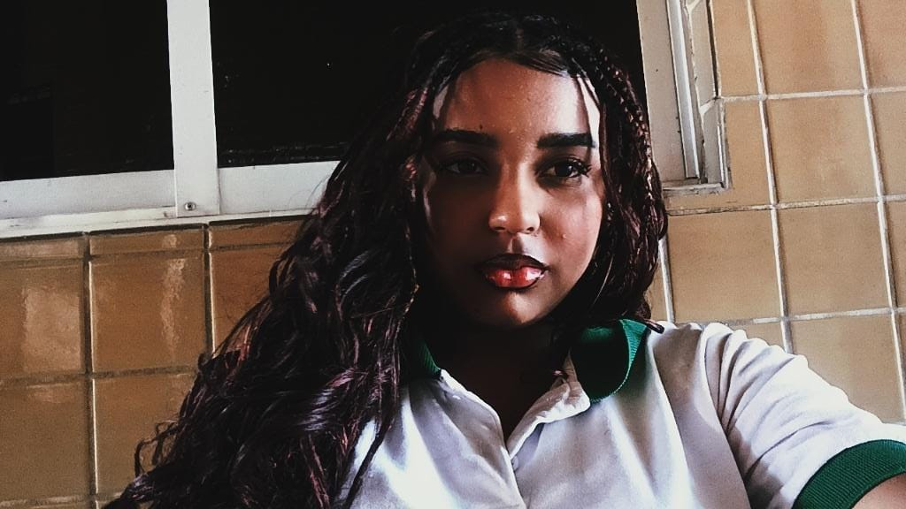

★
PERSONAGEM 01
Jennifer Gabrielli
Uma das protagonistas desta trajetória, sempre buscando aprender, evoluir e superar cada novo desafio.
- ✦ Foco
- ✦ Determinação
- ✦ Criatividade
★ SELEÇÃO DE PERSONAGENS ★
PERSONAGEM 01
Uma das protagonistas desta trajetória, sempre buscando aprender, evoluir e superar cada novo desafio.

PERSONAGEM 02
Uma das protagonistas da aventura, construindo sua trajetória através de experiências, aprendizados e novos objetivos.